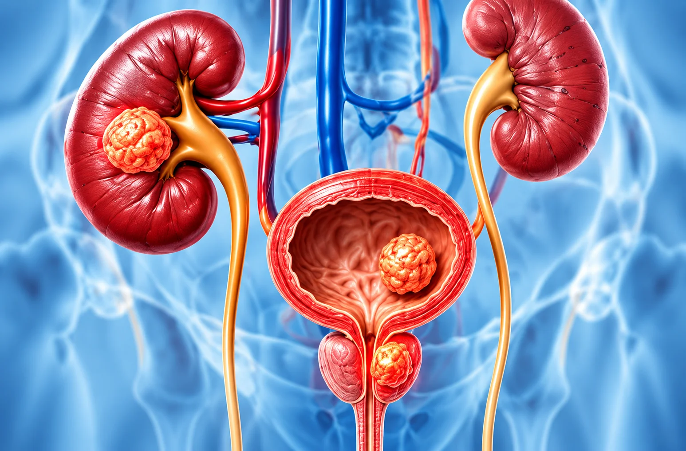

Uro-Oncology
Specialist Care for
Specialist Care for
Urological Cancers
Evaluation and surgical care for kidney, bladder and prostate cancers, guided by your diagnosis and individual needs.
Book Your AppointmentCancer-Focused
Evaluation
Evaluation
Diagnostic
Guidance
Guidance
Individualised
Care
Care
Follow-up
Planning
Planning

UnderstandingUnderstanding
Understanding
Urological Cancers
Uro-oncology focuses on cancers involving the urinary system and, in men, the prostate. These include kidney, bladder and prostate cancers.
The type, location and stage of a cancer help guide further tests and treatment planning.
Possible Warning Signs
Symptoms vary by cancer type and can also have non-cancer causes. They should be checked by a clinician.
- Blood in the urine
- Persistent side or back pain
- Persistent changes in urination
- Ongoing pelvic discomfort
- Difficulty passing urine
- Unexplained fatigue
- Frequent or urgent urination
- Unexplained weight loss
Diagnosis & Evaluation


Cystoscopy /
How Urological Cancers Are Evaluated
Tests help identify the affected organ and assess the extent of disease.
Investigations depend on symptoms and clinical findings.
Medical
Urine & Blood Tests
Imaging Tests
Cystoscopy /
Biopsy
What to Expect During Treatment
Your care plan depends on the diagnosis, stage and recommended approach.
Before Treatment
- Review medical history and reports
- Discuss findings and options
During Treatment
- Follow the agreed treatment plan
- Approach depends on cancer type and stage
After Treatment
- Follow recovery instructions
- Discuss results and next steps
Follow-up Care
- Monitor recovery and response
- Continue surveillance as advised
Frequently Asked Questions
Your Questions Answered
Uro-oncology is the branch of care focused on cancers of the urinary system and, in men, the prostate.
A biopsy may be recommended when a tissue sample is needed to help identify the type of cancer. Your clinician will explain whether it is appropriate.
It commonly covers kidney, bladder and prostate cancers.
Treatment planning depends on the cancer type, stage, location, test results and your overall health.
No. Blood in the urine can have several causes, but it should be assessed by a healthcare professional.
Surgery may be part of treatment for some urological cancers. The recommended approach depends on the individual diagnosis.
Assessment may include medical evaluation, urine and blood tests, imaging and cystoscopy or biopsy when indicated.
Follow-up helps the care team monitor recovery, review results and plan ongoing surveillance or treatment as needed.
Need guidance about urological cancer care?
Consult a urologist about evaluation and treatment options for kidney, bladder or prostate cancer.